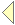
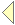
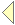

 


|  | Lecture 1 |
| LECTURE 1: Chapter one of two Kurt Nørmark © |
| Page 1 | Section one | |
| Page 2 | First note page | |
| Page 3 | Page 2 |
| Generated: Tuesday July 26, 2005, 10:27:49 on the system cs-unix |